cleanEdge is now cheap enough to leave on, and it’s on by default. Below that is a plainer side-by-side of the four ways to draw the white cut outline, with what each one is.
It used to work out, for every pixel on screen, which way the art’s staircases lean: about 20 texture reads and a few dozen comparisons each. Those decisions depend only on the art, so it now works them out once for each sprite pixel when the sprite is made and keeps them in a table. A screen pixel looks up its entry and does at most three line tests. The picture is identical to the slow version: across eight views, the only differing pixels were a pod that had moved between captures.
A second gain came free. Just having cleanEdge’s code in the scene shader slowed every pixel, even with cleanEdge off. The scene now has two compiled versions, so the plain scene got faster too.
| View | Before, off | Before, on | Now, off | Now, on |
|---|---|---|---|---|
| 20° / 30°, zoom 2 | 8.5 ms | 63 ms | 5.6 ms | 7.6 ms |
| 60° / 25° | 14.0 ms | 86 ms | 9.2 ms | 10.5 ms |
| 45° / 30° (home) | 14.1 ms | 75 ms | 9.0 ms | 10.6 ms |
| 35° / 18° | 13.9 ms | 90 ms | 8.3 ms | 11.0 ms |
What it does, on a walkway at 60° / 25°, zoom 2. The yellow edge and the railing become steady lines rather than stepped pieces:
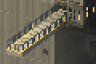
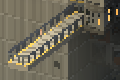
cleanEdge doesn’t touch the white cut outlines when they’re drawn as lines; it smooths the art under them.
When a level is cut, each block’s top gets a thin white outline. There are two ways to draw it, and each can be with or without cleanEdge:
Before and after the fix look almost the same here, and both look like the 2D view: near edges solid, far edges dotted. The bug mostly ate far-edge pixels, and 2D draws those dotted anyway, so at this angle it hid itself. In the art is dotted all the way round, even on the near edges.
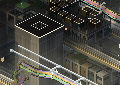
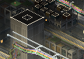
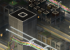
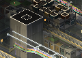
Look at the top’s left edge. Before the fix it is almost all gone; fixed, it is whole. In the art it breaks into dashes along every edge, and cleanEdge joins some of them back up but not all.
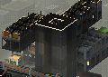
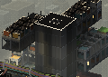
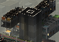
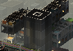
The same story at a shallower turn: before the fix the far edges thin out to a few pixels, the fixed lines stay whole, and the in-art outline goes ragged.
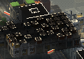
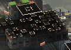
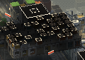
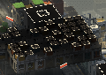
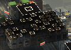
The trade-off you noticed. Because the fixed lines are drawn on top, they’re crisper than the art around them, which is the “drawn on” look. If that keeps bothering you, the next thing to try is making the line follow the art more closely: a slightly dimmer colour, or a dotted rhythm that matches the art’s pixel grid on near edges too.